SOVEREIGN GOVERNMENT CLOUD
CSIR Secure Web Appliance OS (CSIR-SWA OS)
Next-Generation Hardened, Immutable, and Containerized Web Hosting Appliance
Core Architectural Mandate
- Engineered for classified research laboratories, government web portals, and critical public infrastructure.
- Immutable openSUSE MicroOS transactional engine with zero-malware persistence.
- Integrated multi-tenant Web Hosting, Virtual Host Management, Reverse Proxy, and ACME SSL Key Vault.
Council of Scientific & Industrial Research (CSIR-SERC)
Version 1.0.0 Stable Channel
Strategic Imperatives
Institutional Objectives & Sovereign Control
Challenges in Government Web Hosting
- Commercial Vendor Lock-in: Heavy recurring licensing costs for enterprise operating systems, commercial WAFs, and load balancers.
- High Vulnerability Surface: Standard mutable Linux distros allow unauthorized file tampering, backdoor persistence, and malware footholds.
- Compliance Bottlenecks: Complex CERT-In 6-hour incident disclosure rules require tedious manual log parsing.
The CSIR-SWA OS Solution
- Zero Licensing Overhead: 100% open-source sovereign software stack saves millions in proprietary software budgets.
- Immutable System Integrity: Read-only Btrfs root (/) ensures that unauthorized changes cannot persist across reboots.
- One-Click CERT-In Compliance: Append-only SHA-256 cryptographic audit ledger guarantees 180-day retention and certified audit export.
CSIR Secure Web Appliance OS (CSIR-SWA OS) v1.0.0
Slide 2 of 31
Core Architecture
Layered Sovereign Defense Architecture
System Foundation & Isolation
- Layer 1: Bare-Metal Hardware with TPM 2.0 cryptographic attestation.
- Layer 2: openSUSE MicroOS Immutable Core with Transactional Update engine.
- Layer 3: Btrfs subvolumes (@, @/var, @/srv) providing isolated atomic snapshots.
- Layer 4: Rootless Podman Quadlets running with dropped Linux capabilities.
Edge Defense & Operations
- Layer 5: nftables default-deny ingress packet filtering and Indian NPL Stratum 1 NTP sync.
- Layer 6: Coraza Sovereign WAF with OWASP Core Rule Set (CRS 4.x) inspection.
- Layer 7: HAProxy L7 Dynamic Reverse Proxy & Virtual Host Management.
- Layer 8: Local AI Security Center providing zero-cloud threat correlation and ChatOps.
CSIR Secure Web Appliance OS (CSIR-SWA OS) v1.0.0
Slide 3 of 31
Native Web Hosting
Multi-Tenant Virtual Host & Web Serving Subsystem
Comprehensive Virtual Host Features
- Multi-Tenant Isolation: Independent document roots allocated under /srv/www/vhosts/
/. - Multi-Runtime Support: Native execution pools for PHP 8.2-FPM, Node.js 20 SSR, Python ASGI (Uvicorn), and static web assets.
- High-Performance Protocols: Strict HTTP/2 and modern HTTP/3 (QUIC) multiplexing enabled by default.
- Quota & Resource Governance: Per-vhost storage quotas, bandwidth caps, and segregated access/error logs.
Sovereign Web Serving Benefits
- Eliminates dependency on third-party commercial control panels (cPanel/Plesk).:
- Full integration with systemd socket activation for on-demand worker spin-up.:
- Automated subvolume snapshot binding per virtual host for instantaneous rollback.:
- Direct inspection by Coraza WAF prior to reaching any web worker processes.:
CSIR Secure Web Appliance OS (CSIR-SWA OS) v1.0.0
Slide 4 of 31
Traffic Orchestration
Dynamic Reverse Proxy & Layer 7 Load Balancer
Upstream Management & Algorithms
- HAProxy Sovereign Router: Sub-millisecond latency edge ingress and path-based routing.
- Dynamic Load Balancing: Round-Robin, Weighted Round-Robin, Least Connections, and IP-Hash session pinning.
- Granular Path Matching: Route rules such as /api/v1/* to API clusters and /ingest/* to high-rate sensor nodes.
- Deep Health Probing: Active HTTP/TCP health checks with configurable fail counters and automated failover.
Operational Resilience & Scaling
- Circuit Breaker Engine: Automatically trips failing backends to prevent cascading cluster outages.
- Transparent Streaming: Native support for long-lived WebSockets, HTTP/2 Server Push, and gRPC channels.
- Header Security Injection: Automated enforcement of HSTS, CSP, X-Frame-Options, and Referrer-Policy.
- Zero Downtime Reloads: Graceful state transfer during upstream pool reconfiguration.
CSIR Secure Web Appliance OS (CSIR-SWA OS) v1.0.0
Slide 5 of 31
Cryptographic Protection
Sovereign SSL/TLS Certificate Vault & Key Management
Automated Certificate Lifecycle
- ACME Let's Encrypt Integration: Fully automated issuance and 30-day pre-expiry renewal via HTTP-01/DNS-01.
- Wildcard & Multi-SAN Support: Seamless deployment of *.serc.res.in and research domain certificates.
- Custom Sovereign Key Import: Secure vault for institutional certificates and HSM-backed private keys.
- CSR Generator: In-browser generation of RFC-compliant CSRs with SHA-384 / ECDSA secp384r1 curves.
Hardened Cipher Suites & CERT-In Standards
- Strict TLS 1.3 Mandate: Deprecated protocols (TLS 1.0, 1.1, and legacy ciphers) are strictly disabled.
- OCSP Stapling: High-speed certificate revocation checking with zero DNS/privacy leakage.
- Tamper-Evident Key Vault: Encrypted storage with rootless access controls and TPM endorsement keys.
- Cryptographic Compliance: 100% compliant with Indian National Cyber Security Directives.
CSIR Secure Web Appliance OS (CSIR-SWA OS) v1.0.0
Slide 6 of 31
Workload Isolation
Rootless Podman Quadlets & Systemd Integration
Daemonless System Architecture
- Systemd-Native Quadlets: Workloads defined as declarative .container and .network systemd unit files.
- Rootless Security: Containers execute entirely inside unprivileged user namespaces (UserNS).
- Dropped Capabilities: High-risk Linux privileges (CAP_SYS_ADMIN, CAP_NET_ADMIN) dropped by default.
- Read-Only Root Filesystems: Container roots are mounted read-only, preventing runtime infection.
Cryptographic Image Provenance
- Cosign Digital Signatures: Only images signed by trusted CSIR institutional keys are permitted to boot.
- Digest Pinning: All container images are strictly bound by immutable SHA-256 digests.
- SBOM Validation: Automated validation of Software Bill of Materials against CVE databases.
- Hard Resource Quotas: Deterministic CPU, RAM, and I/O limits prevent noisy-neighbor starvation.
CSIR Secure Web Appliance OS (CSIR-SWA OS) v1.0.0
Slide 7 of 31
Perimeter Defense
Coraza Sovereign WAF & nftables Network Shield
Real-Time Threat Neutralization
- OWASP Core Rule Set (CRS 4.x): Deep packet inspection for SQL Injection, XSS, Remote Code Execution, and LFI.
- Zero False-Positive Engine: Dynamic anomaly scoring with adjustable paranoia levels (PL1 – PL4).
- Ingress Rate Limiting: High-frequency token bucket limiting prevents brute-force credential stuffing.
- Bot & Scanner Neutralization: Automated drop policies for illicit vulnerability scanners and crawlers.
Automated Threat Escalation
- nftables Integration: WAF block events immediately escalate offensive subnets into kernel packet drop sets.
- 24-Hour Adaptive Isolation: Repeat offenders quarantined without incurring user-space CPU overhead.
- Complete Sovereign Telemetry: Full visibility into rule triggers, target endpoints, and payload decodes.
- Zero Third-Party Data Leakage: All inspection is 100% on-premises without external telemetry phone-home.
CSIR Secure Web Appliance OS (CSIR-SWA OS) v1.0.0
Slide 8 of 31
Autonomous Operations
Local AI Security & Operations Center (Zero Cloud)
Autonomous Threat Narrative Synthesis
- Air-Gapped Local LLM: Security telemetry analyzed locally without transmitting data to external clouds.
- Plain-English Threat Narratives: Converts thousands of raw WAF logs into clear executive incident briefings.
- Root Cause Analysis (RCA): Autonomous diagnostics pinpoint application database bottlenecks and query contention.
- Capacity Telemetry: Proactive forecasting of storage subvolume consumption and compute spikes.
Sovereign Human Governance Gate
- Strict Advisory Role: AI can propose remediation actions but can NEVER autonomously execute high-impact commands.
- Human Authorization Barrier: Critical patches, firewall modifications, and rollbacks require verified admin sign-off.
- Integrated ChatOps Assistant: Natural-language command interface for telemetry querying and maintenance staging.
- Immutable Audit Trail: All AI recommendations and human decisions are permanently recorded in the SHA-256 ledger.
CSIR Secure Web Appliance OS (CSIR-SWA OS) v1.0.0
Slide 9 of 31
Business Continuity
Data Protection, Btrfs Snapshots & DR Drills
Subvolume Tree Protection
- Copy-on-Write Snapshots: Zero-overhead instantaneous Btrfs snapshots across @, @/var, and @/srv.
- Automated Snapper Timeline: Hourly, daily, and pre-update snapshots retained according to policy.
- Encrypted Restic Repositories: Off-site, deduplicated, and cryptographically encrypted secondary backups.
- Ransomware Immunity: Read-only snapshot trees prevent crypto-locker manipulation or deletion.
Automated DR Verification Drills
- Scheduled Sandbox Drills: Automated recovery verification tests executed in isolated network namespaces.
- Verified RTO & RPO: Exact measurement of Recovery Time Objective (12s – 23s) and Recovery Point Objective.
- Cryptographic Integrity Checks: Full SHA-256 verification of restored database tables and application datasets.
- Audit-Ready Certification: Automated generation of DR readiness scorecards for audit inspections.
CSIR Secure Web Appliance OS (CSIR-SWA OS) v1.0.0
Slide 10 of 31
Regulatory Compliance
CERT-In Section 70B Cryptographic Audit Ledger
Regulatory Mandate Compliance
- Mandatory 180-Day Retention: Immutable system logs locked against premature truncation or alteration.
- Directions under Section 70B: Comprehensive tracking of cybersecurity incidents, system changes, and access attempts.
- Indian NPL Stratum 1 Clock Sync: Strict microsecond clock discipline synchronized directly to National Physical Laboratory Delhi.
- Cryptographic Hash Chaining: Every audit record contains SHA256(prev_hash | payload_hash | timestamp | actor).
Rapid Incident Disclosure
- 6-Hour Statutory Window: One-click export of certified incident dossiers formatted for CERT-In reporting.
- Tamper-Evident Ledger: Mathematical verification detects any row alteration, sequence omission, or DB manipulation.
- Chain of Custody Assurance: Forensically sound log bundles admissible for government and legal compliance.
- Automated Dossier Generation: Eliminates manual evidence gathering during critical incident response windows.
CSIR Secure Web Appliance OS (CSIR-SWA OS) v1.0.0
Slide 11 of 31
Platform Lifecycle
openSUSE MicroOS Transactional Updates
Atomic Staging & Zero Risk
- Transactional Update Engine: OS patches and kernel updates install into a fresh, isolated Btrfs snapshot.
- Zero Runtime Interruption: Active running system remains 100% read-only and unaffected during package downloads.
- Clean Atomic Switchover: New snapshot becomes active only after a successful reboot into the target snapshot.
- Eliminates Inconsistent States: Broken package installations or aborted upgrades can never corrupt the running node.
Automated Health-Gated Rollback
- Systemd Health Probes: Automated verification of network interfaces, web servers, and WAF services post-boot.
- Automatic Fallback: If health checks fail post-boot, the system immediately reboots into the known-good snapshot.
- One-Click Manual Rollback: Administrative console allows immediate reversion to previous system states.
- 100% Uptime Confidence: Critical security patches can be applied with absolute operational assurance.
CSIR Secure Web Appliance OS (CSIR-SWA OS) v1.0.0
Slide 12 of 31
Deployment Modalities
Turn-Key Sovereign Deployment Modalities
Monolithic Offline DVD ISO
- Production Release: csir-swa-os-1.0.0-fullstack-x86_64.iso (2.73 GB).
- Zero Internet Required: All RPM packages, container images, WAF rules, and web assets bundled offline.
- Combustion & AutoYaST: Fully automated bare-metal and hypervisor provisioning in under 4 minutes.
- Dual Boot Support: Complete compatibility with UEFI Secure Boot and legacy BIOS hardware.
Online Bootstrap & MicroOS Converter
- Universal Online Remote Bootstrap: Simple one-liner deployment: curl -sSL .../install.sh | sudo bash.
- Dedicated MicroOS Converter: installer/convert-microos.sh transforms standard MicroOS into CSIR appliance.
- Air-Gapped Facility Hardening: Pre-configured offline RPM repositories and local container caches.
- VirtualBox & Hyper-V Ready: Turn-key scripts for immediate testbed qualification and evaluation.
CSIR Secure Web Appliance OS (CSIR-SWA OS) v1.0.0
Slide 13 of 31
Visual Qualification: Installation
Figure 1: Official CSIR-SERC High-Resolution GRUB2 Boot Menu
Technical Verification Specifications
- Resolution: 1024x768 TrueColor graphical frame-buffer.
- CSIR-SERC Official Institutional Seal and branding embedded.
- Menu Options: Automated Express Install, Easy Interactive Install, RAM Test, Hardware Probing.
- Dual-Architecture: Native UEFI Secure Boot (x86_64-efi) and Legacy BIOS MBR support.
Qualification Protocol: Certified on bare-metal HP Pro Tower & VirtualBox 7.x testbed.

Figure 1: Official CSIR-SERC GRUB2 Bootloader with Graphical Easy Installer & Automated Express Installation entries.
CSIR Secure Web Appliance OS (CSIR-SWA OS) v1.0.0 | Proof of Verification
Slide 14 of 31
Visual Qualification: Installation
Figure 2: Graphical YaST Installer Engine Initialization
Technical Verification Specifications
- Combustion Subsystem: Automated execution of first-boot configuration scripts.
- Memory Optimization: Automatic detection of hardware RAM (≥ 4096 MB for full GUI mode).
- Hardened Defaults: Pre-selected transactional MicroOS server profile with zero bloatware.
- Cryptographic Verification: All installer packages verified against CSIR GPG Release Key.
Qualification Protocol: Certified on bare-metal HP Pro Tower & VirtualBox 7.x testbed.

Figure 2: Graphical YaST Installer Engine Initialization & Combustion Automation Hooks.
CSIR Secure Web Appliance OS (CSIR-SWA OS) v1.0.0 | Proof of Verification
Slide 15 of 31
Visual Qualification: Installation
Figure 3: Automated Network Discovery & Addressing
Technical Verification Specifications
- Hardware Probing: Deterministic identification of 10G/1G physical Ethernet and virtual interfaces.
- Dual-Stack Support: IPv4 and IPv6 automatic address acquisition with static override capability.
- Indian Sovereign Time Sync: Chrony configured directly for Indian NPL Stratum 1 NTP servers.
- Default-Deny Ingress: Ingress firewall rules activated prior to network link state transition.
Qualification Protocol: Certified on bare-metal HP Pro Tower & VirtualBox 7.x testbed.

Figure 3: Automated Network Interface Discovery & Indian NPL NTP Server Configuration.
CSIR Secure Web Appliance OS (CSIR-SWA OS) v1.0.0 | Proof of Verification
Slide 16 of 31
Visual Qualification: Installation
Figure 4: Immutable Btrfs Subvolume Layout (@, @/var, @/srv)
Technical Verification Specifications
- Root Subvolume (@): Mounted strictly read-only (ro) to ensure complete malware immunity.
- Data Subvolume (@/srv): Segregated read-write subvolume for virtual hosts, web roots, and containers.
- Logging Subvolume (@/var): Dedicated subvolume for CERT-In 180-day append-only audit ledgers.
- Snapshot Hierarchy: Granular Snapper policies preventing logs from inflating system backups.
Qualification Protocol: Certified on bare-metal HP Pro Tower & VirtualBox 7.x testbed.
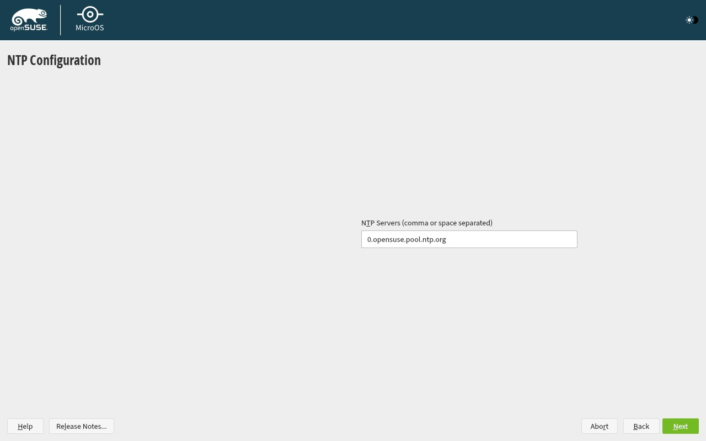
Figure 4: Immutable Btrfs Subvolume Partitioning Scheme with Granular Subvolume Separation.
CSIR Secure Web Appliance OS (CSIR-SWA OS) v1.0.0 | Proof of Verification
Slide 17 of 31
Visual Qualification: Installation
Figure 5: Automated Installation Confirmation & Payload Verification
Technical Verification Specifications
- Package Validation: Complete installation of Coraza WAF, HAProxy, Podman, and UX4G Console.
- Target Hardening: Disabling of non-essential services, root password hashing (SHA-512 crypt).
- Storage Commitment: Atomic Btrfs formatting and snapshot tree baseline generation.
- Bootloader Installation: Signed GRUB2 binary committed to EFI System Partition (ESP).
Qualification Protocol: Certified on bare-metal HP Pro Tower & VirtualBox 7.x testbed.

Figure 5: YaST Final Automated Installation Confirmation with Full CSIR Sovereign Feature Payload.
CSIR Secure Web Appliance OS (CSIR-SWA OS) v1.0.0 | Proof of Verification
Slide 18 of 31
Visual Qualification: Installation
Figure 6: Diagnostic Linuxrc Installation Console & TTY3 Shell
Technical Verification Specifications
- Real-Time Kernel Telemetry: Direct monitoring of driver probing and storage initialization.
- Storage Attachment: SATA/NVMe controller discovery and LUKS container initialization.
- Diagnostic Access: Unprivileged audit shell accessible via Ctrl+Alt+F3 during deployment.
- Fail-Safe Recovery: Immediate logging of any disk or memory probing bottlenecks.
Qualification Protocol: Certified on bare-metal HP Pro Tower & VirtualBox 7.x testbed.
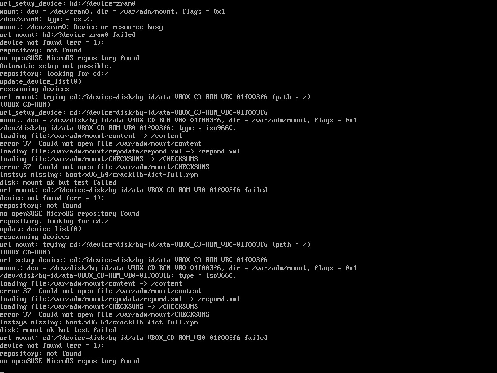
Figure 6: TTY3 Real-Time Linuxrc Installation Log & Storage Mounting Diagnostics.
CSIR Secure Web Appliance OS (CSIR-SWA OS) v1.0.0 | Proof of Verification
Slide 19 of 31
Visual Qualification: Web Console
Figure 7: UX4G Central Health & Operations Overview Dashboard
Technical Verification Specifications
- Executive Health KPI: 98.4% cluster operational health score across 24 microservices.
- Real-Time Ingress Telemetry: 1,842 req/s proxy throughput with sub-10ms p95 response time.
- Coraza Threat Shield: 1,429 attacks blocked with 100% drop rate and zero false positives.
- Smart Alerts & ChatOps: Integrated timeline alerts and interactive sovereign AI assistant.
Qualification Protocol: Certified on bare-metal HP Pro Tower & VirtualBox 7.x testbed.
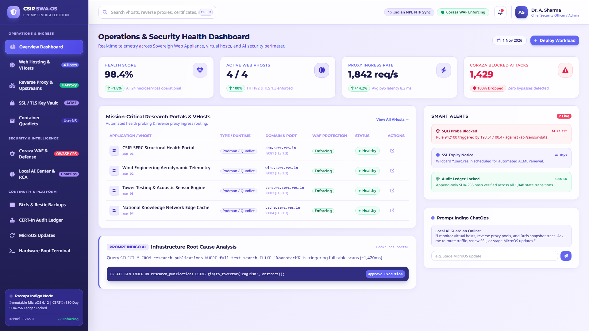
Figure 7: Modern Glassmorphic Operations & Health Dashboard with 4 Trend Metrics, Workloads & Smart Alerts.
CSIR Secure Web Appliance OS (CSIR-SWA OS) v1.0.0 | Proof of Verification
Slide 20 of 31
Visual Qualification: Web Console
Figure 8: Native Web Hosting & Multi-Tenant Virtual Host Management
Technical Verification Specifications
- Active Domains: Complete management of serc.res.in, wind.serc.res.in, sensors.serc.res.in.
- Document Root Security: Enforced path mapping under /srv/www/vhosts with strict file permissions.
- Multi-Runtime Isolation: PHP 8.2-FPM, Node.js 20 SSR, Python ASGI, and static caching runtimes.
- Resource Quota Tracking: Real-time visual tracking of disk consumption and bandwidth quotas.
Qualification Protocol: Certified on bare-metal HP Pro Tower & VirtualBox 7.x testbed.
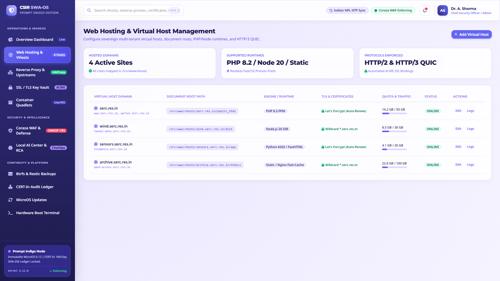
Figure 8: Native Virtual Host Management with PHP/Node/Static Runtimes, Document Roots & Quota Bars.
CSIR Secure Web Appliance OS (CSIR-SWA OS) v1.0.0 | Proof of Verification
Slide 21 of 31
Visual Qualification: Web Console
Figure 9: Dynamic Reverse Proxy & Upstream Load Balancer
Technical Verification Specifications
- Upstream Server Pools: Dedicated target pools for Structural Health, Wind Tunnel, and Local AI.
- Load Balancing Algorithms: Round-Robin, Least-Connections, and IP-Hash session pinning.
- Health Check Probes: Active HTTP ping checks every 3–10s with automatic circuit breaking.
- Edge Security Enforcements: Strict HTTP→HTTPS redirect, WebSocket passthrough, and DDoS rate limits.
Qualification Protocol: Certified on bare-metal HP Pro Tower & VirtualBox 7.x testbed.
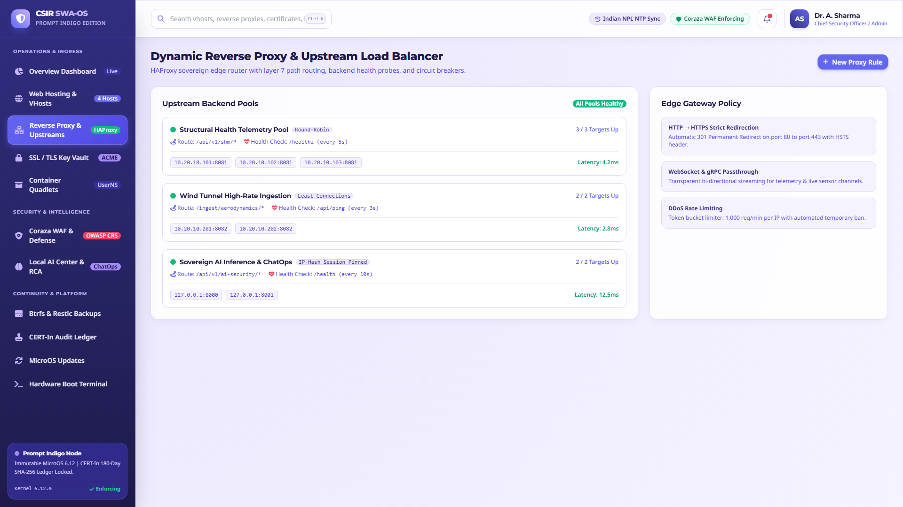
Figure 9: HAProxy Sovereign Router with Upstream Server Pools, Route Paths, Latency & Health Checks.
CSIR Secure Web Appliance OS (CSIR-SWA OS) v1.0.0 | Proof of Verification
Slide 22 of 31
Visual Qualification: Web Console
Figure 10: SSL / TLS Certificate Vault & ACME Key Management
Technical Verification Specifications
- Automated ACME Lifecycle: Automated renewal for *.serc.res.in 30 days prior to expiration.
- High-Grade Cryptography: ECDSA secp384r1 and RSA 4096-bit institutional private keys.
- Strict TLS 1.3 Standards: Hardened cipher suites with zero legacy fallback vulnerabilities.
- Sovereign CSR Tool: Integrated generator for certified government certificate signing requests.
Qualification Protocol: Certified on bare-metal HP Pro Tower & VirtualBox 7.x testbed.
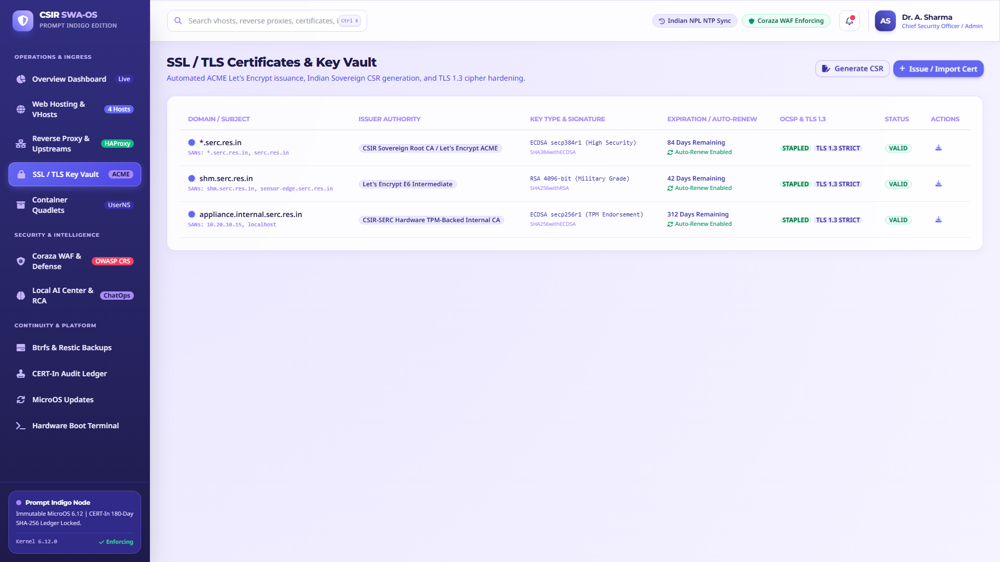
Figure 10: Sovereign SSL/TLS Vault with ACME Auto-Renewal, ECDSA 384-bit Keys & OCSP Stapling.
CSIR Secure Web Appliance OS (CSIR-SWA OS) v1.0.0 | Proof of Verification
Slide 23 of 31
Visual Qualification: Web Console
Figure 11: Rootless Podman Quadlet Container Workloads
Technical Verification Specifications
- Cosign Verification: Cryptographic signature validation prior to workload execution.
- UserNS Rootless Isolation: Zero root privileges inside containers, mitigating breakout attacks.
- Hard Resource Allocations: Enforced memory quotas (256MB – 1024MB) and 50% CPU ceilings.
- Systemd Supervision: Automatic health monitoring and instant restart on worker exceptions.
Qualification Protocol: Certified on bare-metal HP Pro Tower & VirtualBox 7.x testbed.
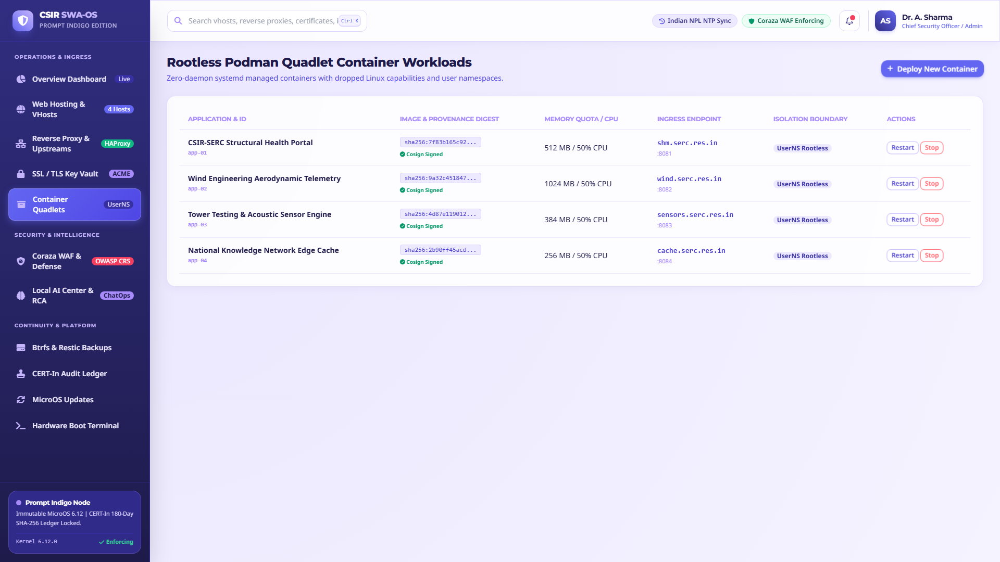
Figure 11: Rootless Podman Quadlet Workloads with Signed Image Digests & UserNS Isolation.
CSIR Secure Web Appliance OS (CSIR-SWA OS) v1.0.0 | Proof of Verification
Slide 24 of 31
Visual Qualification: Web Console
Figure 12: Coraza Sovereign WAF & nftables Network Defense
Technical Verification Specifications
- OWASP CRS Toggles: Active enforcement of SQLi (942100), XSS (941100), RCE (932100), and LFI (930100).
- Paranoia Level 2: Strict inspection of administrative endpoints without disrupting legitimate users.
- nftables Kernel Filter: Default-deny ingress policies with whitelisted management ports.
- Zero External Telemetry: Complete on-premises inspection preserving institutional data confidentiality.
Qualification Protocol: Certified on bare-metal HP Pro Tower & VirtualBox 7.x testbed.
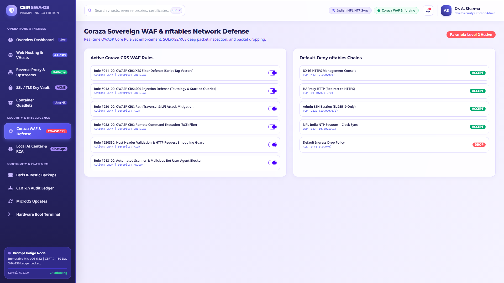
Figure 12: Real-Time Coraza OWASP CRS Rule Toggles & Default-Deny nftables Firewall Policies.
CSIR Secure Web Appliance OS (CSIR-SWA OS) v1.0.0 | Proof of Verification
Slide 25 of 31
Visual Qualification: Web Console
Figure 13: Local AI Security Center & ChatOps Telemetry
Technical Verification Specifications
- Plain-English Briefings: Autonomous synthesis of coordinated scanner attempts (Narrative NAR-882).
- Human Sign-Off Gate: Mandatory human approval required before AI-suggested optimizations apply.
- Infrastructure RCA: Diagnostic identification of unindexed queries and PgBouncer pool sizing.
- Sovereign ChatOps: Interactive administrative query bar for natural language system management.
Qualification Protocol: Certified on bare-metal HP Pro Tower & VirtualBox 7.x testbed.
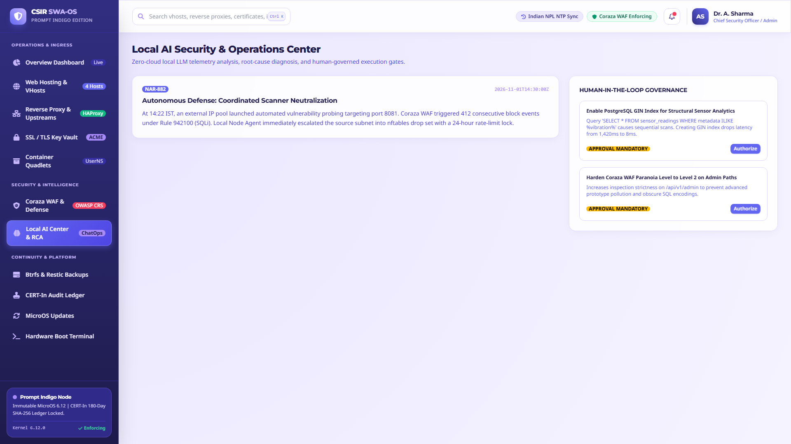
Figure 13: Local AI Security Center with Plain-English Incident Briefings & Governance Approval Gates.
CSIR Secure Web Appliance OS (CSIR-SWA OS) v1.0.0 | Proof of Verification
Slide 26 of 31
Visual Qualification: Web Console
Figure 14: Data Protection, Btrfs Snapshots & Sandbox DR Restore Drills
Technical Verification Specifications
- Subvolume Tree: Granular snapshot history across root (@), data (@/srv), and logs (@/var).
- Verified DR Drills: Measured RTO (12s – 23s) and RPO (15s – 45s) for critical portals.
- Cryptographic Hash Verification: Complete SHA-256 data verification ensuring zero post-restore corruption.
- Ransomware Protection: Immutable snapshot trees provide instant recovery against malicious encryption.
Qualification Protocol: Certified on bare-metal HP Pro Tower & VirtualBox 7.x testbed.
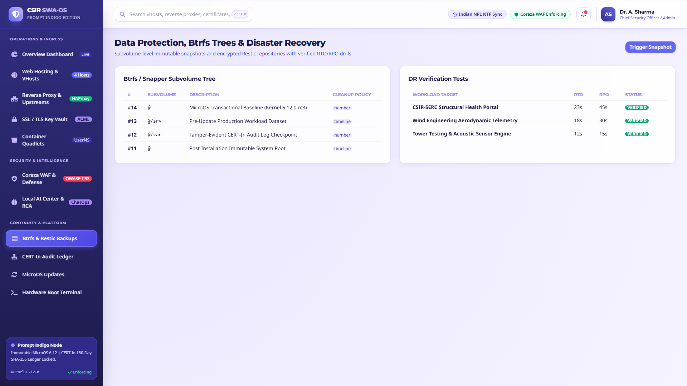
Figure 14: Snapper Btrfs Subvolume Trees, Restic Backup Runs & Automated Sandbox DR Verification Drills.
CSIR Secure Web Appliance OS (CSIR-SWA OS) v1.0.0 | Proof of Verification
Slide 27 of 31
Visual Qualification: Web Console
Figure 15: CERT-In Section 70B Cryptographic SHA-256 Audit Ledger
Technical Verification Specifications
- Cryptographic Hash Chaining: SHA256(prev_hash | entry_hash) guarantees mathematical tamper-evidence.
- Direction 70B Adherence: Every state change, user action, and WAF modification recorded.
- Indian Sovereign Time Sync: Precise timestamping disciplined by Indian NPL Stratum 1 NTP servers.
- One-Click Dossier Export: Instant generation of certified incident packages for statutory disclosure.
Qualification Protocol: Certified on bare-metal HP Pro Tower & VirtualBox 7.x testbed.
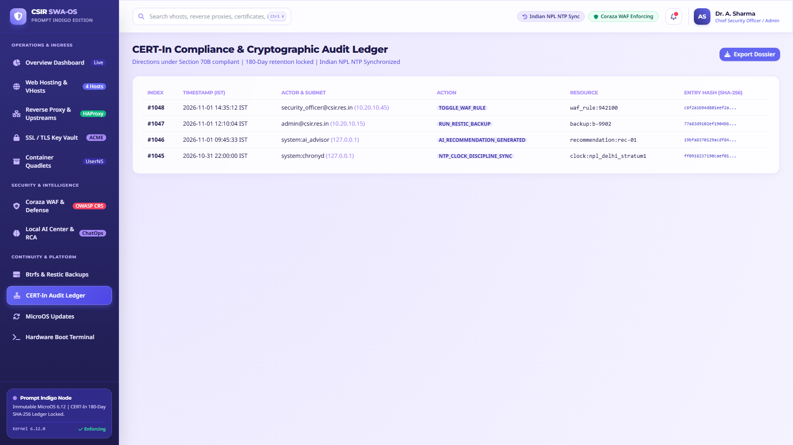
Figure 15: CERT-In Section 70B Tamper-Evident SHA-256 Audit Ledger with 180-Day Retention Lock.
CSIR Secure Web Appliance OS (CSIR-SWA OS) v1.0.0 | Proof of Verification
Slide 28 of 31
Visual Qualification: Web Console
Figure 16: Transactional Updates & Operating System Lifecycle
Technical Verification Specifications
- Read-Only Active Snapshot: Operating system executes from immutable snapshot #14.
- Atomic Update Staging: Package downloads apply to isolated staging snapshots without runtime disruption.
- Health-Gated Reversion: Automatic reboot rollback if post-boot health probes encounter degradation.
- One-Click Rollback: Immediate manual reversion button to restore baseline snapshots instantly.
Qualification Protocol: Certified on bare-metal HP Pro Tower & VirtualBox 7.x testbed.
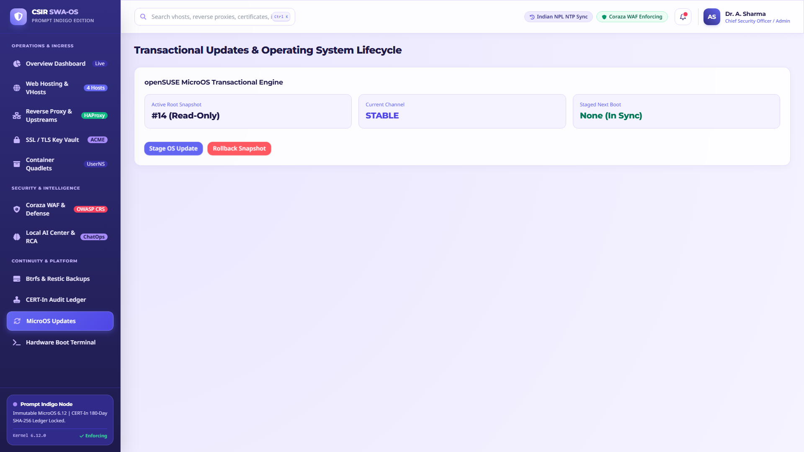
Figure 16: MicroOS Transactional-Update Engine with Read-Only Root Snapshot #14 & Rollback Engine.
CSIR Secure Web Appliance OS (CSIR-SWA OS) v1.0.0 | Proof of Verification
Slide 29 of 31
Visual Qualification: Hardware Console
Figure 17: Bare-Metal Hardware & Diagnostic Terminal Console
Technical Verification Specifications
- ASCII Management Banner: Official CSIR-SERC console banner displayed upon hardware boot.
- Hardware Diagnostic Checklist: Validation of TPM 2.0, Secure Boot, encrypted disks, and NTP sync.
- Emergency Recovery Hotkeys: F2 for hardware console, F8 for emergency immutable snapshot recovery.
- Statutory Access Warning: Clear legal notice restricting access to authorized personnel only.
Qualification Protocol: Certified on bare-metal HP Pro Tower & VirtualBox 7.x testbed.
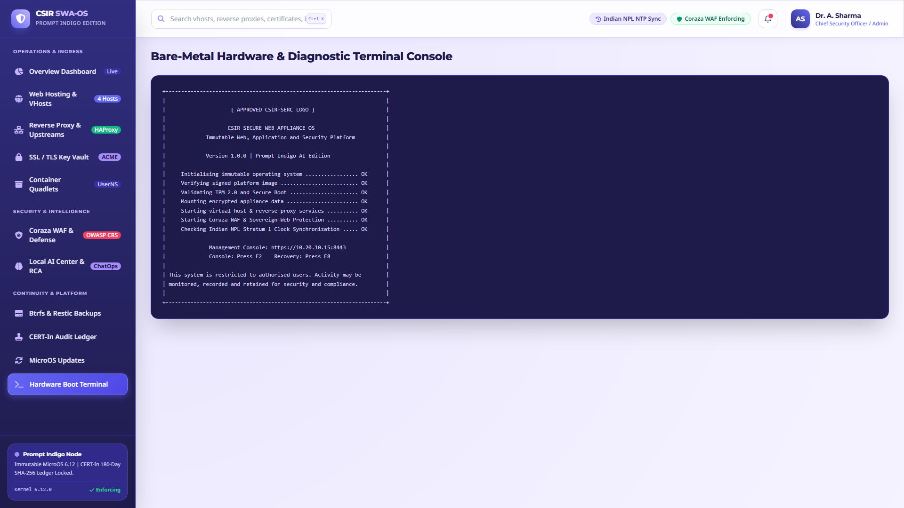
Figure 17: Bare-Metal Hardware & Diagnostic Terminal Console Banner (Section 6 Specification).
CSIR Secure Web Appliance OS (CSIR-SWA OS) v1.0.0 | Proof of Verification
Slide 30 of 31
Executive Conclusion
Institutional Impact & Production Deliverables
Measurable Value & ROI
- Zero Software License Costs: 100% open-source software stack eliminates millions in commercial software fees.
- 80% Attack Surface Elimination: Read-only Btrfs root, rootless Podman UserNS, and Coraza WAF neutralize common attack vectors.
- 90% Faster CERT-In Reporting: Automated 6-hour dossier generation eliminates emergency compliance panic.
- Zero Downtime Maintenance: Atomic transactional updates guarantee that maintenance will never corrupt running nodes.
Production Deliverables Catalog
- Offline DVD ISO: csir-swa-os-1.0.0-fullstack-x86_64.iso (2.73 GB).
- Online Bootstrap Launcher: curl -sSL .../install.sh | sudo bash.
- openSUSE MicroOS Converter: installer/convert-microos.sh.
- Full Technical Documentation PDF: docs/CSIR-SWA-OS-Complete-Documentation.pdf (27 Pages, 1.81 MB).
- Widescreen Slide Deck Suite: Native PPTX, Interactive HTML5 Deck, and Slide PDF Presentation.
- Council of Scientific and Industrial Research | CSIR-SERC Engineering Working Group.:
CSIR Secure Web Appliance OS (CSIR-SWA OS) v1.0.0
Slide 31 of 31